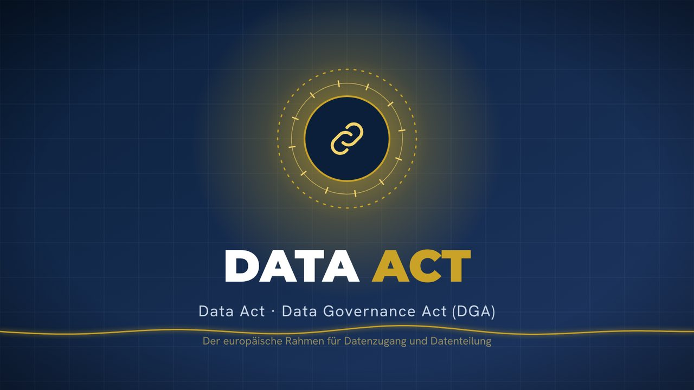

ARG
ARGARGOS › Vorschriften in 4 Minuten › Data Act und DGA
Data Act und DGA in 4 Minuten: Deutschland: eine Behörde mit Biss
Der Data Act und der Data Governance Act bilden den europäischen Rahmen für Datenzugang und Datenteilung. Industriedaten gehören nicht mehr automatisch dem Hersteller. In Deutschland gibt es bereits eine Behörde mit Biss.

- 0:00Wem gehören sie?
- 0:11Die Verordnung
- 0:30In Deutschland
- 0:51Data Act
- 1:02Pflichten
- 1:23Der DGA
- 1:39Termine
- 2:01Europa
- 2:23Die BNetzA
- 2:39Was tun
Das Wichtigste
- 12.9.2025 in der ganzen Europäischen Union
- 24.9.2023 der DGA gilt
- 12.9.2025 der Data Act gilt
- 12.9.2026 Datenzugang ab Design
- 12.1.2027 Ende der Cloud-Wechselentgelte
- DADG Durchführungsgesetz seit Mai 2026
- Bundesnetzagentur Anlaufstelle, auch für den DGA
- BfDI Personenbezogene Daten, nicht die Länder
Transkript
Vollständiger Text der Sprecherstimme
0:00 · Wem gehören sie?
Dein Traktor erzeugt Daten. Deine Maschinen auch. Dein Aufzug, dein Auto, dein Zähler. Doch die Daten behält der Hersteller. Wem gehören sie eigentlich?
0:11 · Die Verordnung
Der europäische Data Act gilt in der ganzen Union seit dem 12. September 2025. Nutzer vernetzter Produkte haben das Recht, auf ihre Daten zuzugreifen, einfach, sicher und kostenlos, und sie mit Dritten zu teilen. Und ab dem 12. Januar 2027 darf kein Cloud-Anbieter mehr für den Wechsel kassieren.
0:30 · In Deutschland
In Deutschland gibt es bereits eine Behörde mit Biss. Das Durchführungsgesetz gilt seit Mai 2026. Die Bundesnetzagentur ist zentrale Anlaufstelle. Für personenbezogene Daten ist die Bundesbeauftragte zuständig, nicht die Länder. Seit Mai gingen mehr als 700 Beschwerden ein. Und die Behörde kann auch von Amts wegen tätig werden.
0:51 · Data Act
Der Data Act und der Data Governance Act bilden den europäischen Rahmen für Datenzugang und Datenteilung. Industriedaten gehören nicht mehr automatisch dem Hersteller.
1:02 · Pflichten
Was er vom Hersteller verlangt. Produkte so gestalten, dass Nutzer auf ihre Daten zugreifen. Vor Vertragsschluss informieren, welche Daten entstehen und wie man zugreift. Mit Dritten nach Wahl des Nutzers teilen, zu fairen Bedingungen. Und Geschäftsgeheimnisse mit vereinbarten Maßnahmen schützen. Nicht personenbezogene Daten nur wie mit dem Nutzer vereinbart.
1:23 · Der DGA
Der Data Governance Act ergänzt das Bild. Weiterverwendung geschützter Daten des öffentlichen Sektors. Neutrale, registrierte Datenvermittlungsdienste. Und Datenaltruismus für das Gemeinwohl. Der Digital-Omnibus will ihn in den Data Act integrieren.
1:39 · Termine
Die Termine. 24. September 2023: Der Data Governance Act gilt. 12. September 2025: Der Data Act gilt. 12. September 2026: Datenzugang ab Design. Und 12. Januar 2027: Schluss mit Wechselentgelten in der Cloud.
2:01 · Europa
In Europa ist die Karte uneinheitlich. Deutschland: die Bundesnetzagentur, mit mehr als 700 Beschwerden. Die Niederlande, mit Gesetz und Behörde. Dänemark, wo nur Gerichte Bußgelder verhängen. Frankreich: Cloud-Ausstieg schon für null Euro. Belgien bereitet seine Behörde vor. Und Spanien, Portugal und Italien sind noch ohne Behörde.
2:23 · Die BNetzA
In Deutschland bündelt die Bundesnetzagentur Daten, Cloud und KI. Hersteller, Anbieter, Nutzer und Dritte können sich beschweren. Gegen ihre Entscheidungen geht es vor die Verwaltungsgerichte. Und wer aus dem Ausland nach Deutschland liefert, muss hier antworten.
2:39 · Was tun
Was jetzt zu tun ist. Datenblätter je Produkt, ein Verfahren für Zugangsanfragen, faire Verträge und ein Plan für den Cloud-Ausstieg. ARGOS prüft, ob der Zugang wirklich funktioniert, mit Tests an den realen Systemen und Nachweisen für Kunden und Behörde. Data Act: Daten im Dienst derer, die sie erzeugen.
Häufige Fragen
Was ist Data Act und DGA?
Der Data Act und der Data Governance Act bilden den europäischen Rahmen für Datenzugang und Datenteilung. Industriedaten gehören nicht mehr automatisch dem Hersteller. Der europäische Data Act gilt in der ganzen Union seit dem 12. September 2025. Nutzer vernetzter Produkte haben das Recht, auf ihre Daten zuzugreifen, einfach, sicher und kostenlos, und sie mit Dritten zu teilen. Und ab dem 12. Januar 2027 darf kein Cloud-Anbieter mehr für den Wechsel kassieren.
Was verlangt Data Act und DGA?
Was er vom Hersteller verlangt. Produkte so gestalten, dass Nutzer auf ihre Daten zugreifen. Vor Vertragsschluss informieren, welche Daten entstehen und wie man zugreift. Mit Dritten nach Wahl des Nutzers teilen, zu fairen Bedingungen. Und Geschäftsgeheimnisse mit vereinbarten Maßnahmen schützen. Nicht personenbezogene Daten nur wie mit dem Nutzer vereinbart.
Welche Termine sind wichtig?
Die Termine. 24. September 2023: Der Data Governance Act gilt. 12. September 2025: Der Data Act gilt. 12. September 2026: Datenzugang ab Design. Und 12. Januar 2027: Schluss mit Wechselentgelten in der Cloud.
Was gilt in Deutschland?
In Deutschland gibt es bereits eine Behörde mit Biss. Das Durchführungsgesetz gilt seit Mai 2026. Die Bundesnetzagentur ist zentrale Anlaufstelle. Für personenbezogene Daten ist die Bundesbeauftragte zuständig, nicht die Länder. Seit Mai gingen mehr als 700 Beschwerden ein. Und die Behörde kann auch von Amts wegen tätig werden. In Deutschland bündelt die Bundesnetzagentur Daten, Cloud und KI. Hersteller, Anbieter, Nutzer und Dritte können sich beschweren. Gegen ihre Entscheidungen geht es vor die Verwaltungsgerichte. Und wer aus dem Ausland nach Deutschland liefert, muss hier antworten.
Was sollte ein Unternehmen jetzt tun?
Was jetzt zu tun ist. Datenblätter je Produkt, ein Verfahren für Zugangsanfragen, faire Verträge und ein Plan für den Cloud-Ausstieg. ARGOS prüft, ob der Zugang wirklich funktioniert, mit Tests an den realen Systemen und Nachweisen für Kunden und Behörde. Data Act: Daten im Dienst derer, die sie erzeugen.
Offizielle Quellen
- Verordnung (EU) 2023/2854 (Data Act) (EUR-Lex)
- Verordnung (EU) 2022/868 (DGA) (EUR-Lex)
- Bundesnetzagentur
- Regulierungsdatenblätter von Software in a Box
Weiter mit
 C5 und ISO
C5 und ISOC5 und ISO in 4 Minuten: Ein Nachweis ist kein Formular
 DSGVO
DSGVODSGVO in 4 Minuten: Geahndet wird vor allem das Grundsätzliche
 EHDS
EHDSEHDS in 4 Minuten: Für Kliniken, Hersteller und Gesundheitsunternehmen
Sprecherstimme und Musik mit künstlicher Intelligenz erzeugt (Art. 50 KI-Verordnung). Allgemeine Information, keine Rechtsberatung; Stand November 2026, nach den Regulierungsdatenblättern von Software in a Box. Videoclips lizenziert über Envato.
Zum Einbinden dieser Präsentation in eine andere Website: <iframe src="https://argos.softwareinabox.eu/de/vorschriften/data-act-dga/presentacion/?embed=1" width="960" height="540" allow="autoplay; fullscreen" title="Data Act und DGA in 4 Minuten: Deutschland: eine Behörde mit Biss"></iframe> mit einem Link auf diese Seite.
Auch verfügbar auf: EspañolFrançaisFrançais (Belgique)ItalianoNederlandsNederlands (België)PortuguêsDansk